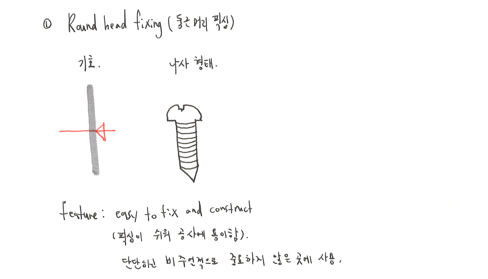
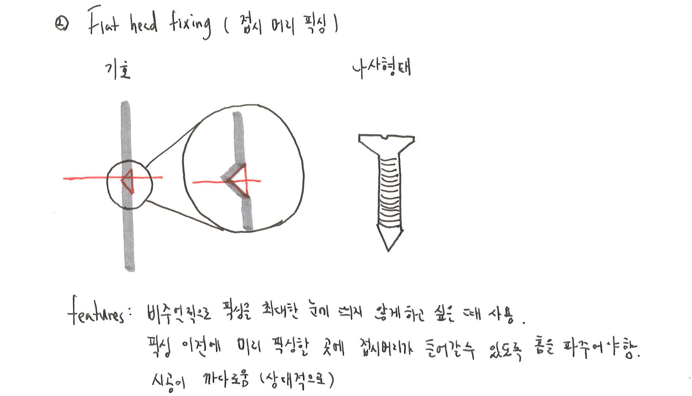

Two basic types of screw
This article we will cover up just basic knowledge about fixation. There are hundreds of fixing methods, but in this article we will only talk about the most basic and commonly used method : SCREW. Screws are extremely ordinary method and product that we can easily see and touch, but we do not have much knowledge about them. This is just a first article about fixation, I choose to talk about something architectural points in this area. Rather than making deep technical research.
Before starting ths article, what is your most concerns when you make screws in your wall or funitures? Have you ever put tape or glues instead to using screws? When you have that experience, what was the reason? I assume that many of us worry about exposed head when screws are used.And this is our point.
1. Head of screws are usually exposed.
2. Is there no way to hide those head? But still using screws?
Round head fixing

First basic fixing type is round head fixing. The left drawing is diagram which shows its characteristic. Fixation is protruded to the fixing wall. The right drawing shows general shape of round head fixing, it has rounded head with its head thickness. Feature of round head fixation is that it is easy to construct, for that reason many of fixation is done by round head screws.
However, we know some big problem of this screw, which many of us already have some experience. When round head is screwed to the wall, we can clearly see its head! In this reason, round head screw is usually used in the place where visual consideration is not so much important.
Flat head fixing

In contrast, flat head fixing is used where visual appearance is relatively important. On the left diagram, we can see that fixing head line is aligned to the section wall line. Shape of screw is also different. Width of head is going thinner toward neck of the screw.
However, construction method is slightly more complicated. As head is not sharp as it’s body (with thread of screw), before fixing scree, we should make a groove for head to go through. In summarise, where we can’t see details of screw, actually we don’t need to put flat head fixing, except in the case where protruded head occur problems in attaching components. Rather to put round head fixing or flat head fixing, is our design oriented choice.
Furthermore, we can also think about completely hiding screw details, however this is connected to combining method of two or more different components.